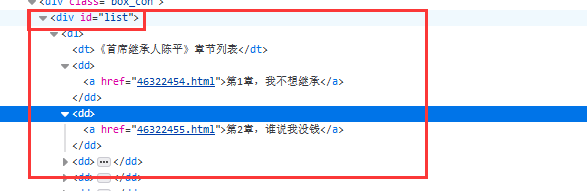

下面直接上菜。
1.首先我需要导入相应的包，这里我采用了第三方模块的架包，requests。requests是python实现的简单易用的HTTP库，使用起来比urllib简洁很多，因为是第三方库，所以使用前需要cmd安装。
cmd安装方式，打开cmd，输入以下命令：
pip install requests
2.添加相应的包后，我们需要一个小说链接去爬下这本小说也就是一个url。下面是我当时爬的小说url：http://www.shujy.com/5200/244309/
3.我们现在有了小说的链接，这时候就要模拟浏览器发送http的请求：
response=requests.get(url)
response.encoding='gbk'
4.我们可以尝试获取目标小说的网页源码
html=response.text我们把它打印出来看下：
有html基础的朋友应该对这些很熟悉。通过打印我们可以看见小说的名字，作者，以及小说章节的url。这时候我们就先通过HTML网页源码获取小说的名字：
title=re.findall(r'<meta property="og:novel:book_name" content="(.*?)"/>',html)[0]从上面的代码我们可以看见是通过正则表达式去匹配的，对正则表达式有疑问的同学可以自行百度下。当然不同网站的具体小说名字可能会放在不同的标签里，需要我们打开网页源码去看看下。
5.这时候我们也就新建一个文本文件来保存小说内容。
fb=open('%s.txt'% title,'w',encoding='utf-8')这时候我们需要获取小说的章节目录对应的url，我们还是来观察下网页的源码。我们通过火狐浏览器的f12看下网页可发现：

小说的章节目标都在标签<div id='list'>里我们通过下面的代码获取对应的章节名和url。用一个list来存放章节信息。
dl=re.findall(r'<div id="list">.*?</div>',html,re.S)[0]
chapter_info_list=re.findall(r'<a href="(.*?)">(.*?)</a>',dl)6.这个时候我们循环每一章节，分别下载，先把章节的链接，章节名提取出来。
for chapter_info in chapter_info_list:
chapter_url,chapter_title=chapter_info
chapter_url="http://www.shujy.com/5200/244309/%s " % chapter_url
chapter_url=chapter_url.replace(' ','')我们可以看见对章节的链接进行的拼接，因为我们可以看见直接提取出来的链接是这样的：
所以也就需要一个拼接的操作，取得完整的章节链接。
这个时候来下载小说内容：
chapter_response=requests.get(chapter_url,headers=headers)
chapter_response.encoding='gbk'
chapter_html=chapter_response.text我们先是获取到小说具体章节的页面。打开具体小说章节f12查看网页的源码：
可以清楚的看见小说的具体内容是在标签<div id=content>里，和获取小说章节一样我们采用正则表达式来取得小说的内容。
chapter_content=re.findall(r'<div id="content">(.*?)</div>',chapter_html,re.S)[0]我们把获取到的小说的内容打印出来看看，
我们看见一些奇怪的字符 ，<br/>等，我们在实际的小说里没有这些东西，这里就需要我们处理数据。进行一些操作，也叫做数据的清洗。
chapter_content=chapter_content.replace(' ','')
chapter_content=chapter_content.replace('<br />','')
chapter_content=chapter_content.replace('&t;','')清洗后的小说内容：
7.现在就是最后一步把小说保存到本地。
fb.write(chapter_title)
fb.write('\n')
fb.write(chapter_content)
fb.write('\n')
print(chapter_url,chapter_title)我们来看下最后的结果，我们每爬完一章打印相应的章节链接信息和返回的response信息来看是否成功爬取：
当当当当，成功的爬下了这边小说。
最后总结下，本次的爬虫就很简单是小阿鹏的初次尝试，中间如果有不对的地方也希望大家的指正，谢谢！